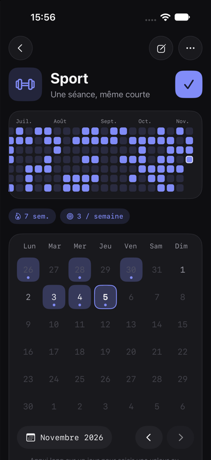
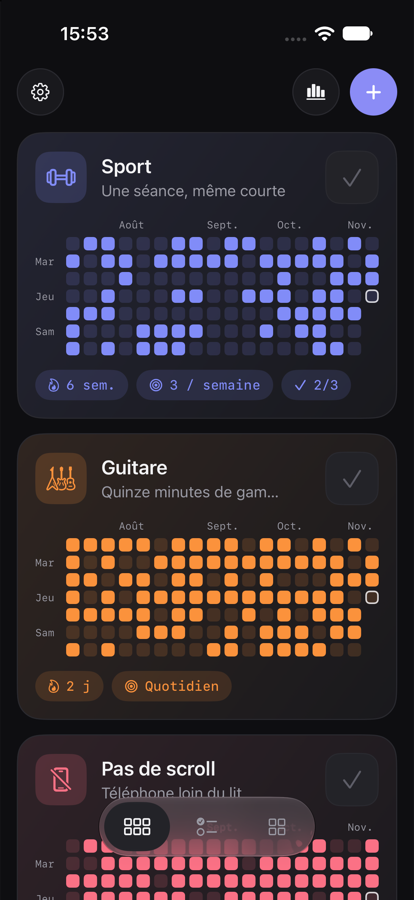
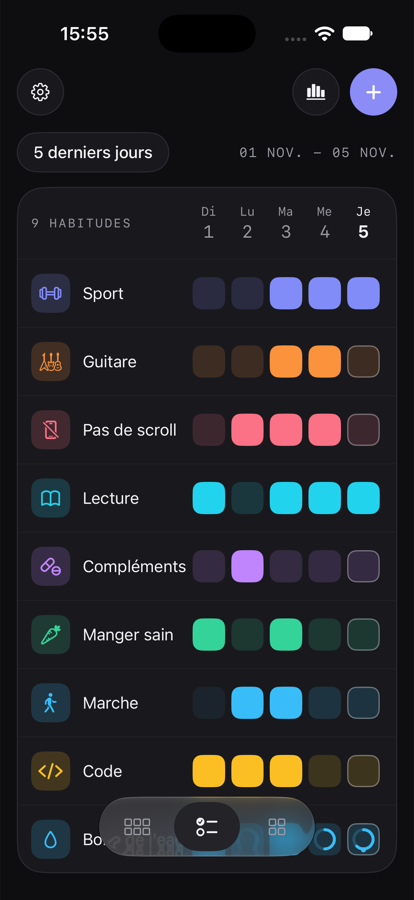

Le calendrier en cases
Une colonne par semaine, une case par jour, teintée selon la part de l'objectif atteinte. Sur l'accueil, en cartes, en lignes sur les derniers jours ou en grille du mois. Touchez une case pour cocher un jour oublié.
Suivi trace vos habitudes en petites cases, jour après jour : lecture, sport, eau, écrans... Cochez d'un geste, sur l'iPhone, la montre ou un widget. Sans compte, sans publicité, sans pisteur.
iOS 26 - iPhone - Gratuit - Installation avec AltStore ou SideStore



Captures de Suivi, avec des habitudes de démonstration.
Chaque habitude a son calendrier en cases. D'un coup d'œil : ce qui tient, ce qui flanche, et depuis combien de temps.
Une colonne par semaine, une case par jour, teintée selon la part de l'objectif atteinte. Sur l'accueil, en cartes, en lignes sur les derniers jours ou en grille du mois. Touchez une case pour cocher un jour oublié.
Une case à cocher, un compteur par pas, ou une mesure avec son unité. Pour chaque jour, certains jours, ou tant de fois par semaine ou par mois. Et les habitudes à arrêter.
La série en cours et le record, en jours, en semaines ou en mois selon l'habitude. Les jours réussis mois par mois, et le taux de réussite de chaque habitude.
Plusieurs rappels par habitude, à l'heure et les jours de votre choix, avec votre message. "Fait" se touche depuis la notification. En option, un bilan du soir de ce qui reste à faire.
Quelques mots sur la journée, pour chaque habitude, retrouvés dans son journal. Pour comprendre une série cassée, ou un bon mois.
Une habitude en trois styles, Carte, Anneau ou Couleur, en petit, moyen ou grand, cochable sans ouvrir l'app. Et l'Aperçu de toutes vos habitudes, en liste du jour ou en semaine. Sur l'écran verrouillé aussi.
La liste du jour, validée d'un toucher. Le détail avec la Digital Crown pour un compteur. Même sans iPhone à côté.
"Valider Lecture dans Suivi", à la voix ou dans une automatisation.
Le calendrier d'une habitude en image, avec sa série, pour la montrer à qui vous voulez.
Une habitude en pause sort de l'accueil, son historique reste. Reprise quand vous voulez.
Une copie complète par jour, les 30 dernières gardées, dans Fichiers > Sur mon iPhone > Suivi. Et une copie de sécurité avant chaque import.
Tout s'exporte : en JSON, réimportable tel quel, ou en CSV, une ligne par jour, pour un tableur.
Suivi n'est pas sur l'App Store. Il s'installe avec AltStore ou SideStore, qui le signent avec votre identifiant Apple. iOS 26 est nécessaire.
Installez une fois AltStore ou SideStore sur votre iPhone, en suivant le guide de leur site.
Téléchargez le fichier .ipa de Suivi sur l'iPhone, puis ouvrez-le avec AltStore ou SideStore.
Créez une première habitude, puis posez un widget : appui long sur l'écran d'accueil, bouton +, Suivi.
Avec un identifiant Apple gratuit, l'app doit être signée à nouveau tous les 7 jours : AltStore et SideStore s'en chargent. Vos habitudes restent sur l'iPhone d'une version à l'autre.
Non. Rien n'est envoyé au développeur de Suivi : pas de compte à créer, pas de serveur, pas de publicité, pas de mesure d'audience. Vos habitudes, vos notes et vos sauvegardes restent sur votre iPhone et votre Apple Watch.
Dans Suivi, Réglages > Exporter tout (JSON), et gardez le fichier dans iCloud Drive ou sur un ordinateur. Sur le nouvel iPhone, installez Suivi puis Réglages > Importer une sauvegarde : tout revient, historique et notes compris.
La synchronisation iCloud entre appareils n'est pas disponible dans la version installée avec AltStore ou SideStore : elle demande une signature que ces outils ne fournissent pas.
Pour lire vos habitudes, les widgets partagent leurs données avec l'app. Selon la façon dont AltStore ou SideStore a signé Suivi, ce partage peut manquer : le widget l'indique alors au lieu de montrer vos cases. L'app, elle, fonctionne entièrement.
Si c'est votre cas, signalez-le avec votre version d'iOS et l'outil utilisé.
Téléchargez le fichier de la nouvelle version, sur la page Toutes les versions, et ouvrez-le avec AltStore ou SideStore, comme la première fois. Vos habitudes sont gardées.
Un iPhone sous iOS 26 ou plus récent. L'app de l'Apple Watch, facultative, demande watchOS 26 et accompagne celle de l'iPhone ; selon l'outil d'installation, elle peut ne pas être proposée sur la montre.
Remplissez le formulaire Signaler un problème, avec votre version de Suivi (Réglages > Version), celle d'iOS et ce qui s'est passé.
Ces messages sont publics : n'y mettez rien de personnel, ni note privée, ni habitude que vous ne voulez pas rendre publique.
iOS 26 - iPhone - Gratuit